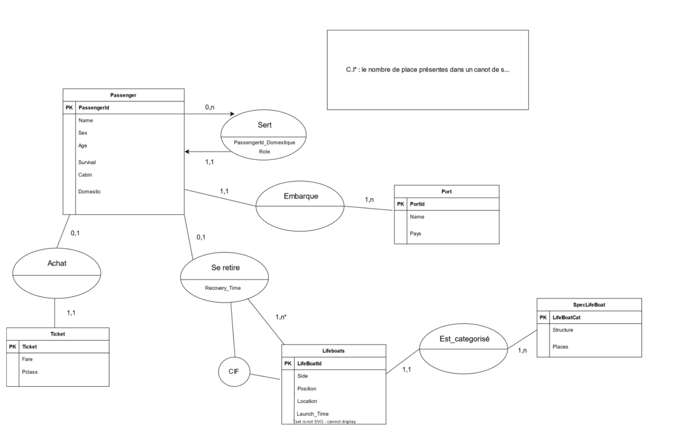
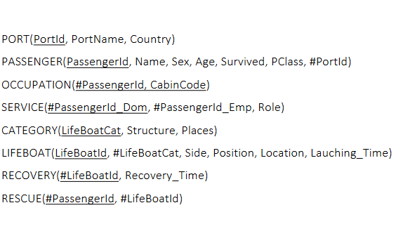
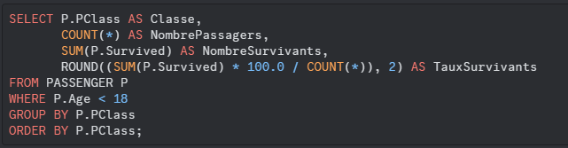

Création d'une base de données
Mission
Création d'une base de données pour analyser la situation du naufrage du Titanic.
But
Concevoir une base de données SQL de A à Z et l'exploiter pour récupérer des informations.
Nombre de participants
2 personnes
Travail effectué par tout le monde
Tout d'abord, nous avons défini des règles de gestion basées sur le sujet, déterminant la conception de la base de données. Ces règles de gestion établissent des contraintes, telles que les relations entre les différentes tables, la multiplicité, le type des attributs, et quels attributs regrouper dans une même table.
Ensuite, nous avons conçu et justifié un schéma entité-association (SEA). Le SEA représente graphiquement les différentes tables de la base de données, leurs attributs et les relations entre elles. À partir de ce SEA, nous avons produit un schéma relationnel (SLR), une représentation textuelle des tables et de leurs attributs, y compris les clés primaires et étrangères. Le SLR, fourni dans le cadre du projet, a été implémenté dans PostgreSQL. Nous avons également justifié les choix ayant conduit au SLR fourni.
Enfin, nous avons écrit des requêtes SQL pour exploiter la base de données et rédigé un rapport succinct des conclusions tirées du naufrage grâce à ces données.
Travail que j'ai effectué
Globalement, nous nous sommes partagé le travail de manière plutôt équilibrée, ce qui a eu comme effet de ne pas nous avoir attribué des tâches spécifiques.
Ressources
Images ci-dessous
Compétences du programme national
- Mettre à jour et interroger une base de données relationnelle (en requêtes directes ou à travers une application)
- Visualiser des données
- Concevoir une base de données relationnelle à partir d’un cahier des charges

SEA de la base de données

SLR de la base de données (fourni)
